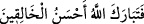
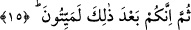
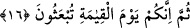

Bu âyet inince Hz. Ömer (r.a.) “__WORD__ dedi. Efendimiz (a.s.) da: “Böyle
indirildi, ey Ömer.”[71] buyurdu. Ömer (r.a.) sözünün vahye uygun düşmesiyle iftihâr
ederdi. Bir bak bu hâdise nasıl Ömer (r.a.)’ın saâdetine ve İbn Ebî Serh’in şakavetine
sebep oldu. Nitekim Allah Teâlâ: “Allah onunla bir çoklarını saptırır, birçoklarını
da doğru yola iletir.” (el-Bakara, 2/26) buyurmuştur.
“Beşer, Kur’an nazmının benzerini önceden söylemiştir.” denilemez. Bu, Kur’an’ın
i‘câzını zedeler. Zirâ beşer, en kısa sûre miktarında Kur’ân’ın bir sûresinin benzerini
getiremez.
15. Sonra, muhakkak ki siz, bunun ardından elbet öleceksiniz.
“Sonra, muhakkak ki siz, bunun ardından” yâni zikredilen hayret verici işlerden
sonra “elbet öleceksiniz.” kesin olarak ölüme ulaşacak/dûçar olacaksınız. Yâni, sizin
hâlinizin neticesi ölümdür; fenâ/yokluk kadehini ecel sâkîsinin elinden içeceksiniz.
Bazıları şöyle der: “Kim dünyadan ölürse (geçerse) âhiret hayatına çıkar. Kim de âhiret
hayatından ölürse (geçerse) ondan aslî hayata, yâni Allah Teâlâ ile bakâya çıkar.
16. Sonra da şüphesiz, siz kıyamet gününde tekrar diriltileceksiniz.
“Sonra da şüphesiz, siz kıyamet gününde” sûra ikinci defa üflenmesi ile birlikte
“tekrar diriltileceksiniz” hesaba çekilmek, yaptıklarınıza sevab ve ceza ile karşılık
verilmek üzere kabirlerinizden çıkarılacaksınız.
Âyette işâret vardır ki insan, insanlık mertebesine ulaştıktan sonra, kalbin ve nefsin
ölümü gibi ölüme ve onların haşrine kabiliyetli olur. Kalbin ölümünde nefsin hayatı ve
haşri vardır. Nefsin ölümünde ise kalbin hayatı ve haşri söz konusudur. Nefsin hayatı
hevâ ve onun zulmeti iledir. Kalbin hayatı Allah ve O’nun nûru iledir. Nitekim Allah
Teâlâ: “Ölü iken dirilttiğimiz ve kendisine bir nur verdiğimiz kimse…”(el-En’âm,
6/122) İşte “Sonra da şüphesiz, siz kıyamet gününde tekrar diriltileceksiniz.” âyetinin
hakîkatinin mânâsı budur. et-Te’vîlâtü’n-Necmiyye’de böyle geçmektedir.
el-Es’iletül-mukhime’de der ki: “İnsanın yaratılışından diriltilmesine kadar
geçireceği safhalar burada sayıldı. Fakat kabir suâlinden bir şey zikredilmedi. Bu, kabir
suâlinin önemli bir şey olmadığını gösterir.” denilirse, bunun cevabı şöyledir: Allah
Teâlâ amele sebep olan birinci hayat ile yapılanların karşılığının verilmesinin sebebi
olan ikinci hayatı zikretti. Âyette kastedilen bu ikisidir. Bu, zikredilenin (kabir suâlinin)
olmamasını gerektirmez.
Bilesin ki ölüm, Allah’ın izzetinin kuvvetle şimşek gibi çakması ve azamet nurlarının